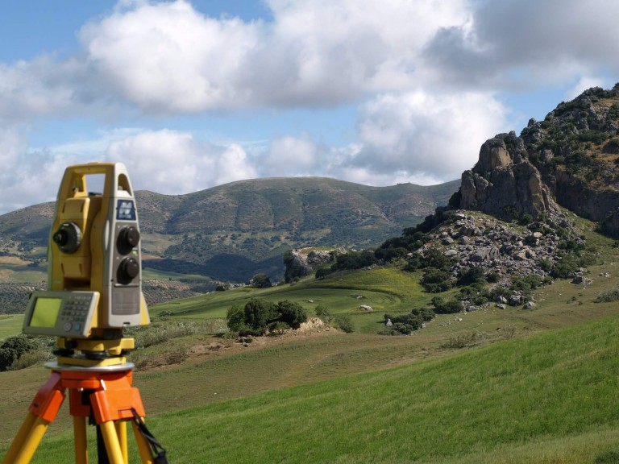
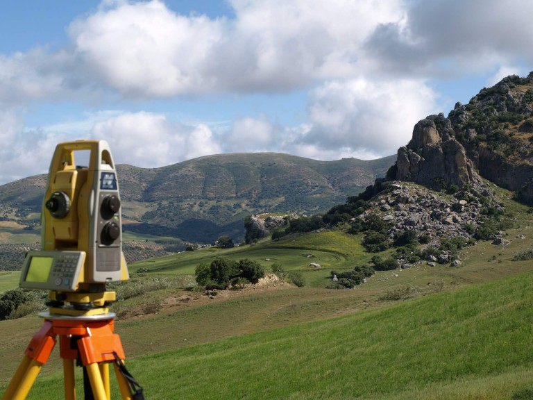

El primer documento en que aparece el término Geomática es en 1970 en Francia, en el Ministerio de Equipamiento y Vivienda. En esa época, fue simplemente referido como el procesamiento automático de los datos Geográficos. Años más tarde, el término Geomática fue re-inventado en Canadá, específicamente en Quebec - provincia de lengua francesa. En sus origenes, como se puede suponer no existian muchas herramientas electronicas de alto nivel, por lo que todo era visual.
La topografía es un concepto bastante amplio, que se utiliza para la descripción del estudio minucioso de la superficie de la tierra. En él se incluyen todos aquellos cambios que posee una superficie como valles, montañas, las características de las carreteras y ríos. hasta aqui, todo sigue siendo topografia, pero ya con la revolucion de la electronica, bases de datos y tecnologia que actualmente es considerada de punta, nace la Geomática.
 

La Geomática, a manera de definición, es un término científico moderno que sirve para expresar la integración sistémica de técnicas y metodologías de adquisición, almacenamiento, procesamiento, análisis, presentación y distribución de información geográficamente referenciada. esto ayuda de manera local, regional, nacional e incluso global dependiendo de que tipo de información se requiera presentar.
Geomática se ocupa de la adquisición, modelado, análisis y gestión de datos espaciales, incluyendo aplicaciones como el posicionamiento por satélites, la percepción remota y la gestión de la información geoespacial. Department of Geomatics Engineering, Schulich School of Engineering, University of Calgary, 2017.